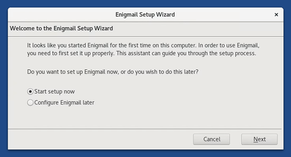

This release fixes many security issues and users should upgrade as soon as possible.
Cambios
Actualizaciones y cambios
Problemas arreglados
Fix importing OpenPGP keys from email attachments. (#15610)
Fix the translations of the homepage of the Unsafe Browser. (#15461)
Para más detalles, lee nuestro changelog.
Problemas conocidos
After upgrading to Tails 3.8, you have to go through the Enigmail Setup Wizard again every time you restart Tails.
Your OpenPGP keys and your per-recipient rules are preserved.
To avoid going through the Enigmail Setup Wizard, you can execute the following command in a terminal before starting Thunderbird:
echo 'pref("extensions.enigmail.configuredVersion", "2.0.7");' >> ~/.thunderbird/profile.default/preferences/0000tails.js

This bug will be fixed in the next version of Tails. (#15693)
Mira la lista de problemas duraderos.
Get Tails 3.8
Para instalarlo, sigue nuestras instrucciones de instalación.
To upgrade, automatic upgrades are available from 3.6, 3.6.1, 3.6.2, 3.7, and 3.7.1.
Si no puedes hacer una actualizar automática o si Tails falla al iniciar despues de una actualización automática, por favor intenta hacer una actualización manual.
¿Qué novedades hay?
Tails 3.9 está planificado para el 5 de septiembre.
Echa un vistazo a nuestro roadmap para ver hacia dónde nos dirigimos.
We need your help and there are many ways to contribute to Tails (donating is only one of them). Come talk to us!